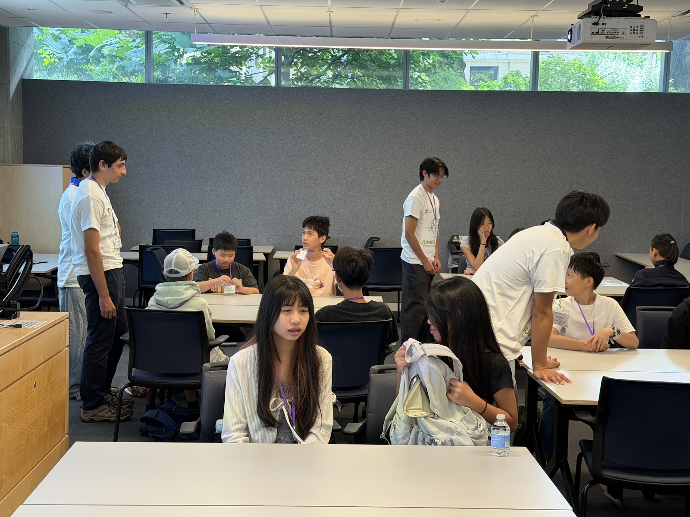
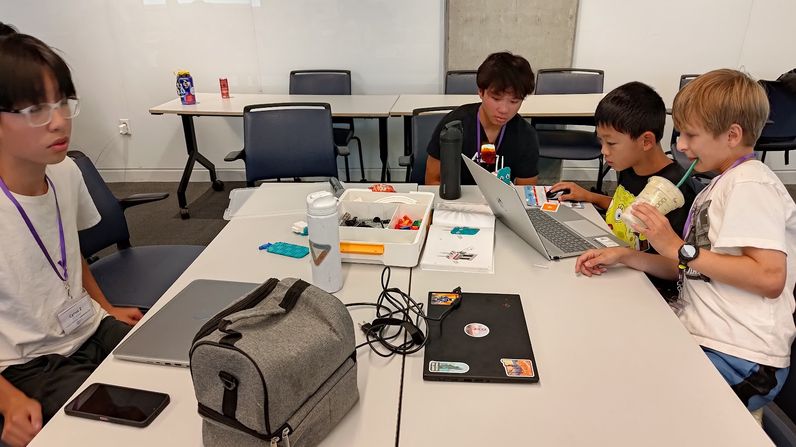
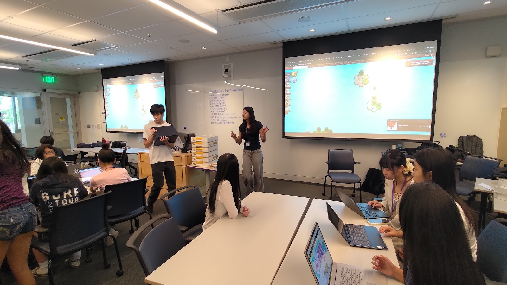
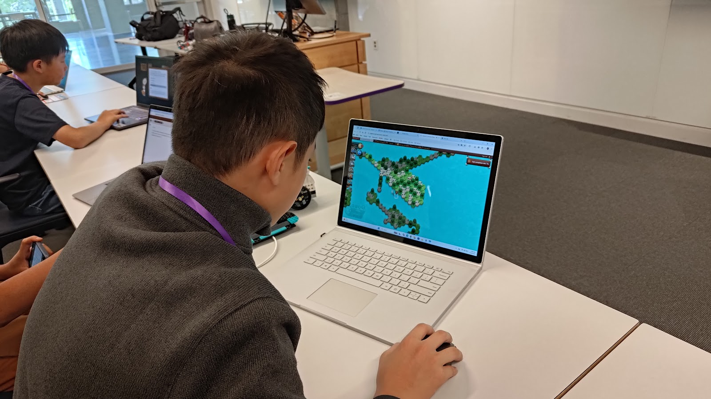
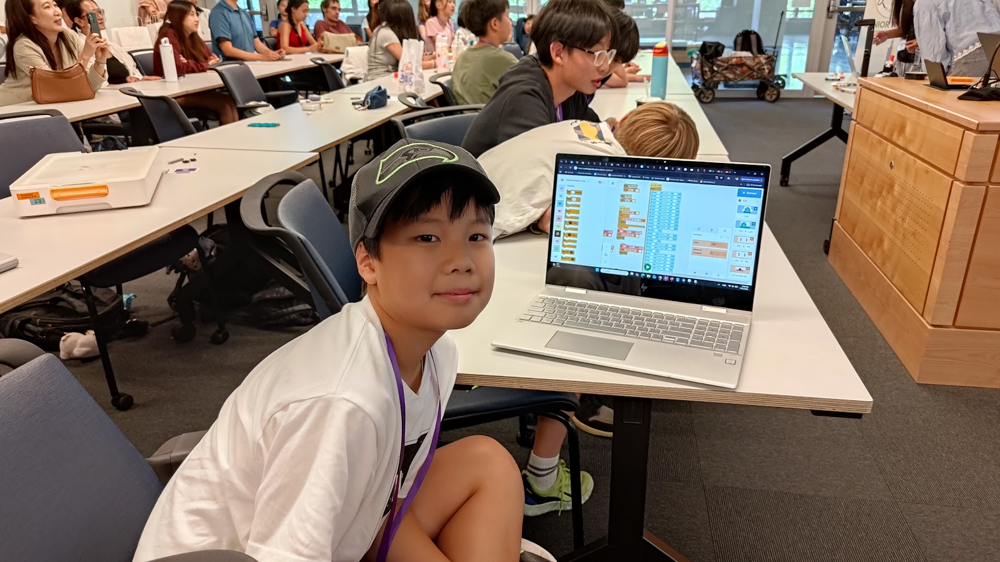
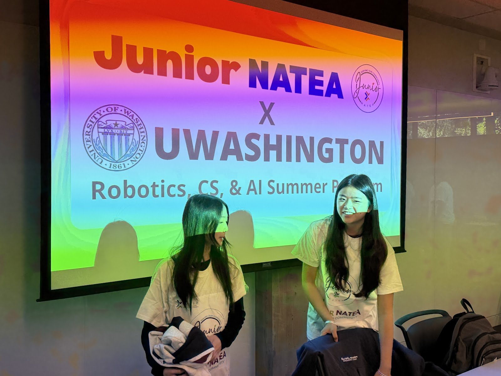

先建立歸屬感
一個學習社群開始成形
隊輔建立清楚而友善的空間，讓學生敢提問、敢嘗試不熟悉的任務，也逐步自在地與新夥伴合作。
完成了什麼
五天裡，學生透過動手挑戰學習迴圈、複合條件、除錯、機器人設計與 AI 基礎概念。各組完成互動式 LEGO 專題，反覆測試與修改程式，最後上台說明設計構想、程式邏輯、遇到的問題與解決方法。
即使現場操作臨時出狀況，學生也開始懂得彼此補位、一起處理；高中生隊輔則適時提醒，把舞台留給孩子。技術能力與團隊自信，在同一個過程中一起長出來。
學習現場

隊輔建立清楚而友善的空間，讓學生敢提問、敢嘗試不熟悉的任務，也逐步自在地與新夥伴合作。

隊輔靠近到足以看見挫折、提出下一個有用的問題，同時讓程式、搭建與決定權留在學生手上。

團隊每天整理學生與家長的真實感受，據此調整節奏、挑戰難度、小組互動與支持方式。

PaGamO 把學習後測轉化為有參與感的每日收尾，也讓教學團隊看見哪些概念需要在隔天繼續補強。

最後留下的不只是一座 LEGO 模型；學生能把螢幕上的程式，連結到自己設計、測試、修改並展示的互動行為。

高中生不只是把課講完，也共同創造現場的活力、關係與團隊期待，讓營隊逐漸成為一個學習社群。
領導力成果
高中生團隊承擔教學、帶隊、教材、報名、溝通、預算、平台設定與每日調整。當他們逐漸能夠當責，指導老師便慢慢退到旁邊，需要時提醒，混亂時接住，但不再替他們做每一個決定。
最後一天，小隊員站上舞台，高中生隊輔帶著驕傲在旁陪伴。營隊結束後，當大家被問到明年是否願意再辦第二屆，幾乎沒有猶豫地回答：「當然要。」最深的成果不是把活動辦完，而是一群年輕人開始相信自己能帶領別人，也願意再為下一群孩子走一次。